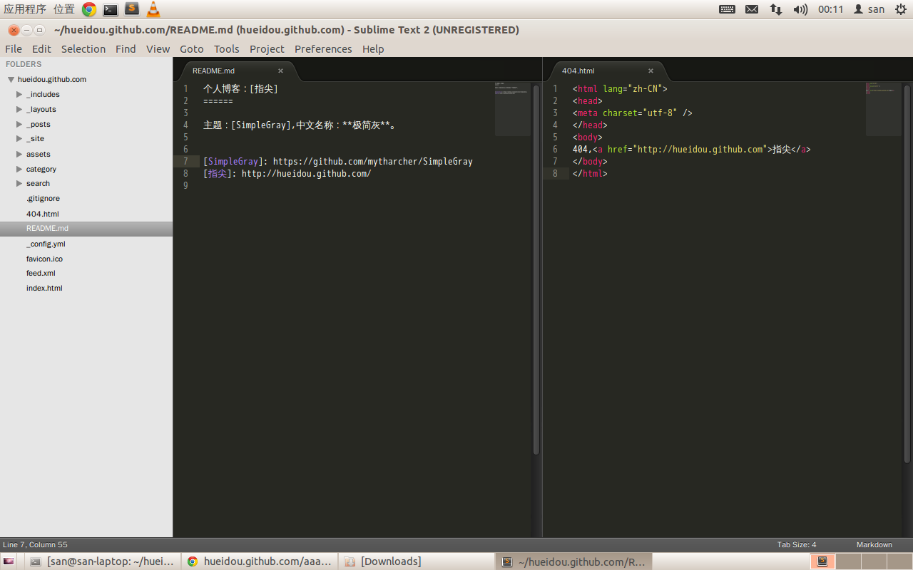

Sublime初用
这几天看文章，很多提到了OS X下的TextMate，可是从评论中看来，一个叫Sublime的编辑器更让我感兴趣。尤其是看到有些Notepad++的用户也转向Sublime，Notepad++是我最喜欢的Windows下的编辑器，小巧，精练，自我感觉可以稍鄙视UltraEdit、EmEditor、EditPlus。
由于近些天完全转向了Linux桌面，精确说是Ubuntu12.04（基本确定以后会换掉这个让我感到太多意外的发行版），Gedit启动慢，Vim还没熟练/学习曲线漫长，Sublime算是个希望。（也算是，如果它把致命的输入法bug修好的话）

Sublime对于我来说的优点：
1.跨平台，Windows、OS X、Linux
2.启动快，不知道加上很多插件后会。。怎样
3.界面好看
4.好多很棒的功能，比Editplus的功能貌似多很多
5.扩展性很强，所以插件多多，Sublime嵌着一个Python解释器
6.共享软件，如果需要可以购买
一些网址：
Sublime官网：http://www.sublimetext.com/
文档1：http://www.sublimetext.com/docs/2/
文档2：http://docs.sublimetext.info/en/latest/index.html
Jekyll插件：https://github.com/dnfehren/SublimeJekyll
Git插件：https://github.com/kemayo/sublime-text-2-git
Package Control：http://wbond.net/sublime_packages/package_control/installation